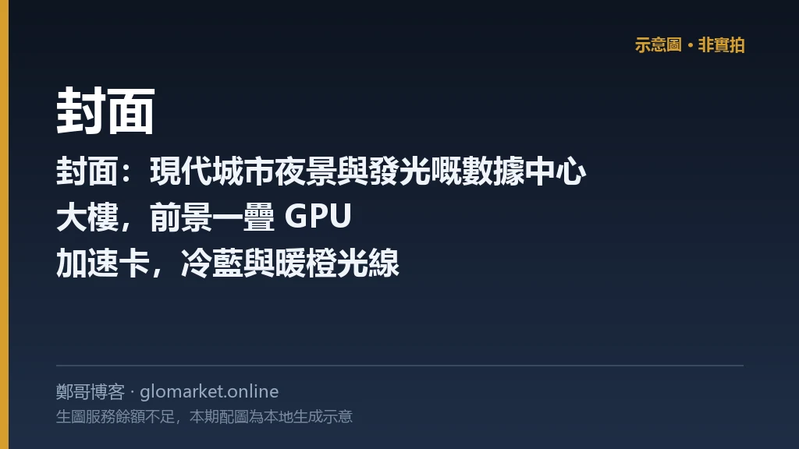
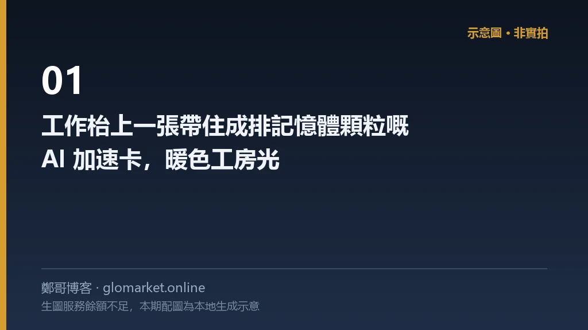
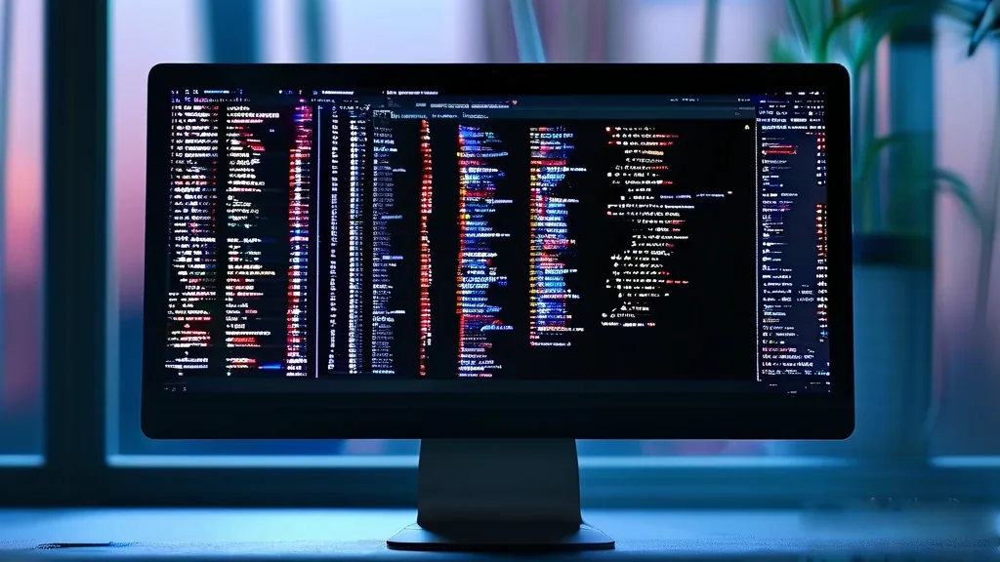
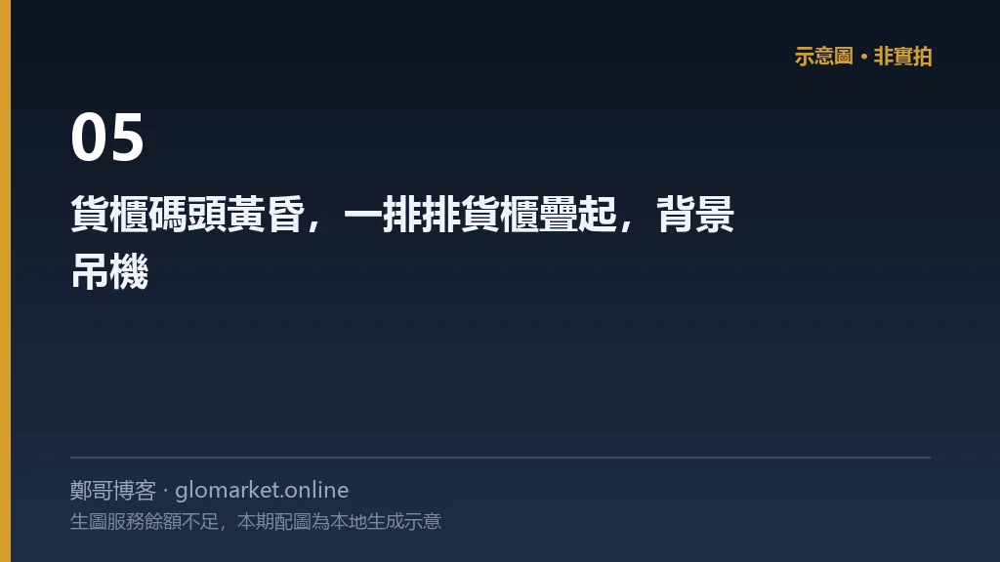
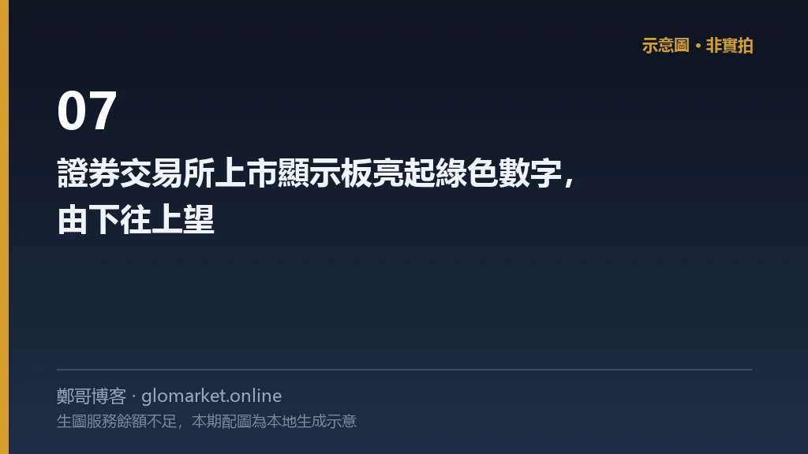
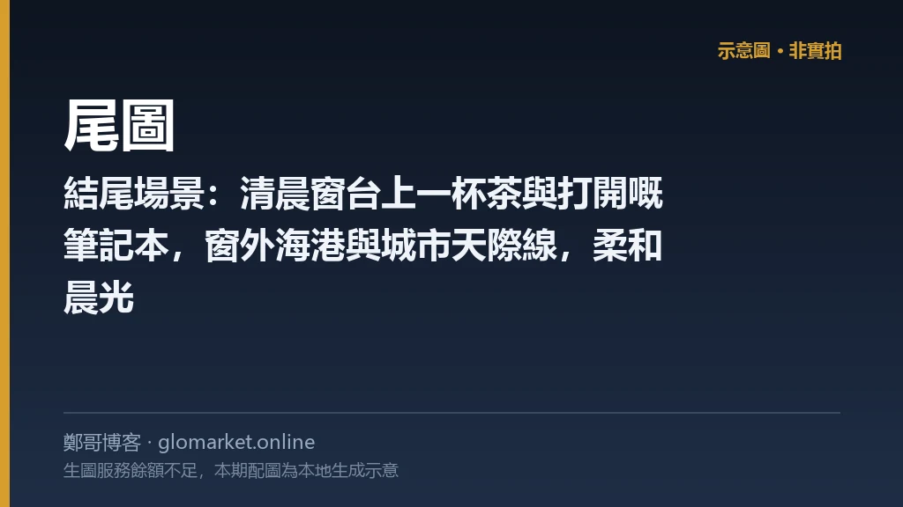

配圖為本地生成示意（非實拍）Local diagram, not a photograph
【鄭哥週評】欄目：鄭哥博客週評｜日期：2026-11-14
呢個星期，AI 行緊兩件相反嘅事：美國開源模型預算 89% 流咗入中國模型袋；六十萬塊 H200 堆喺香港等批，甲骨文撕咗騰訊七十億美元租約。軟件越猛，硬件越緊，廣深企正喺交匯點。

配圖為本地生成示意（非實拍）Local diagram, not a photograph
一、唔使 HBM 嘅卡，反成為 Intel 史上最暢銷
11 月 13 日，Intel CEO 陳立武透露，AI 推理卡「Crescent Island」訂單已超 20 億美元，成 Intel 史上最暢銷顯示卡（新浪科技）。
旗艦 D270 集成 32 個 Xe3P 核心、256 個 XMX 引擎，FP8 峰值 1.3 PFLOPS；顯存唔用受管制嘅 HBM，改用 LPDDR5X，最高 480GB。
我判斷：唔係 Intel 技術贏咗，而係「唔用 HBM」本身成咗賣點——HBM 被管制、又貴又搶手，用平嘢替代反而食正缺口；廣深做算力嘅人，識得用替代料、控成本嘅方案，先係下一個窗口。
來源：新浪科技《480GB 顯存 Intel 最暢銷顯卡 Crescent Island 訂單超 20 億美元》，2026-11-13｜http://finance.sina.com.cn/tech/roll/2026-11-13/doc-iniyriit1092008.shtml

配圖為本地生成示意（非實拍）Local diagram, not a photograph
二、DeepSeek 將成個 App 攤開做 API
11 月 13 日晚，DeepSeek 開放「全家桶應用 API」：開返參數，就有聯網搜索、深度思考、文件輸入（PDF／圖片）、讀連結同安全校驗，OCR、ASR、TTS 可單獨或組合調用（IT之家）。
收費：文字／圖片搜索 5 蚊／千次，網頁抓取 5 蚊／千次，文字識別 1.5 蚊／千頁，語音識別 0.39 蚊／小時、合成 1.5 蚊／萬字元（限時五折）。
我判斷：DeepSeek 將「模型」同「App 能力」拆開批發，開發者可以 1:1 砌返個 App——廣深做客服、做 SaaS、做跨境電商嘅團隊，接入成本會再跌一截。
來源：IT之家《DeepSeek 發布全家桶應用 API：開發者將能 1:1 複刻完整 DeepSeek App》，2026-11-13｜https://www.ithome.com/1/026/960.htm
配圖為本地生成示意（非實拍）Local diagram, not a photograph
三、美國開源預算，89% 俾咗中國模型
Menlo Ventures 11 月 6 日發布《2026 年企業 AI 現狀》：今年美國企業 AI 支出預計 1768 億美元，其中 AI 應用 773 億、編程 AI 340 億、聊天機械人 250 億（財聯社）。
最刺眼嗰個數：美國企業花喺開源模型上嘅錢，89% 流向中國模型——Kimi 61%、DeepSeek 15%、GLM 11%，西方最高嘅 Llama 只分到零頭。
我判斷：呢 89% 唔係因為免費，而係「開源 + 平價 + 中文場景啱用」三樣嘢，把 Llama 逼到冇得企；模型出海食到錢，但背後嘅算力、合規同服務責任一樣追返嚟。
來源：財聯社《美創投機構報告：企業 AI 支出預計達 1770 億美元 開源模型支出近九成流向中國模型》，2026-11-06｜https://m.cls.cn/detail/2527402
配圖為本地生成示意（非實拍）Local diagram, not a photograph
四、深圳騰訊 Hy4：識睇圖、識操作電腦
11 月 4 日，騰訊將混元 Hy4 推成正式版：770B 總參數、49B 激活嘅 MoE，首次加入視覺同「電腦操作（Computer Use）」，上下文突破 100 萬 Token（騰訊雲開發者社區）。
辦公協作平均 83.18 分、通過率 96.15%，12 個場景 9 個國內第一；金融眾測 3.04 分居開源第一；價格維持輸入 6 蚊／輸出 18 蚊，發布期五折。
我判斷：「睇圖 + 操作電腦」先至係 Agent 落地嘅形狀——自己開界面、睇清楚、撳掣做完一件事。深圳硬件加場景都齊，廣深企業軟件同智能終端會最先食到呢一波。
來源：騰訊雲開發者社區《騰訊混元 Hy4 正式版發布，會看圖、能操作電腦》，2026-11-04｜https://developer.cloud.tencent.com/article/2776227

配圖為本地生成示意（非實拍）Local diagram, not a photograph
五、六十萬塊 H200 堆喺香港等批
據路透引消息人士，約 60 萬塊英偉達 H200 芯片留喺香港等運往內地；近幾個月只放行部分，多間大型互聯網公司各獲批約 1 萬塊（騰訊新聞）。
正規渠道受阻，買家轉向中間商同間接渠道，推高非官方價格——截至 10 月底，一部八卡 H200 伺服器喺內地報價超 600 萬元人民幣，約一年前嘅三倍。
我判斷：呢六十萬塊卡堆喺香港，係「廣深算力貴唔貴」嘅晴雨表——批得快，成本回落；批得慢，貴價卡同水貨價一路頂住。做算力託管同 GPU 現貨嗰班人，下個月嘅單價同庫存就睇佢。
來源：騰訊新聞（觀點新媒體）《約 60 萬塊英偉達 H200 晶片滯留香港待轉運內地》，2026-11-06｜https://news.qq.com/rain/a/20261106A064OX00
配圖為本地生成示意（非實拍）Local diagram, not a photograph
六、甲骨文撕咗騰訊 70 億美元租約
11 月 5 日消息，甲骨文取消咗同騰訊總值 70 億美元嘅芯片租賃協議；消息人士話，美國官員曾向甲骨文表達擔憂，廣東省官員亦到訪騰訊，要求支持國產芯片（新浪財經）。
呢單原本係騰訊迄今最大嘅海外租賃交易：五年期，最多 10 萬顆先進 AI 芯片。
我判斷：騰訊喺海外同國產之間被夾咗一下，係成條廣深 AI 供應鏈嘅縮影——上游嘅卡、下游嘅數據中心、中間嘅錢，邊一環都可能被重新定價；租唔到卡嘅公司要即刻補國產算力。
來源：新浪財經（觀點地產網）《傳甲骨文取消與騰訊 70 億美元晶片租賃協議》，2026-11-05｜https://finance.sina.com.cn/stock/estate/integration/2026-11-05/doc-inixrumy8938690.shtml

配圖為本地生成示意（非實拍）Local diagram, not a photograph
七、平頭哥赴港上市，廣深車企排喺客戶名單
11 月 10 日晚阿里公告，已向港交所提交分拆平頭哥獨立上市申請，平頭哥 9 月 11 日已保密遞表，申請 H 股主板上市（觀察者網）。
真武系列 AI 芯片累計出貨 56 萬片，服務 400 多客戶；智駕部署超 13 萬卡，覆蓋廣汽、比亞迪、小鵬等 30 多家車企；2025 年中國雲端 AI 加速器出貨，華為第一、平頭哥第二（IDC）。
來源：觀察者網《阿里確認分拆平頭哥獨立上市，國內 AI 芯片出貨第二》，2026-11-11｜https://www.guancha.cn/CaiJing/2026_11_11_907849.shtml

配圖為本地生成示意（非實拍）Local diagram, not a photograph
八、鄭哥週評
七條讀完，我最記得嘅唔係任何跑分，而係兩條線行到盡頭之後，喺廣深撞埋一齊。
軟件線：89% 美國開源預算流向中國模型，DeepSeek 將成個 App 攤開做 API，騰訊 Hy4 識睇圖識操作電腦——係喺出貨，唔係跟跑。硬件線相反：六十萬塊 H200 堆喺香港，甲骨文撕咗騰訊租約，Intel 靠「唔用 HBM」賣爆——卡越嚟越貴。
我判斷：模型越強、算力需求越大；算力越被卡，模型平價紅利越快被「卡貴」食返走。廣深企正喺中間：一邊係要餵模型嘅騰訊、華為、比亞迪，一邊係要接單嘅芯片、伺服器、數據中心。結論——軟件嘅錢趁窗口食實，硬件命門趁早補；卡價已推高三倍，貴嘅唔係 token，係卡。
配圖為本地生成示意（非實拍）Local diagram, not a photograph
\[Zheng Ge's Weekly Take\] Column: Zheng Ge's blog weekly take | Date: 2026-11-14
This week the AI line was running two stories in exactly opposite directions. On one side, 89% of US companies' open-source model budgets flowed into Chinese models' pockets — Kimi took 61%, DeepSeek 15%, GLM 11%. On the other, 600,000 Nvidia H200s sat stacked in Hong Kong awaiting approval, and Oracle tore up its US$7 billion chip lease with Tencent. The software keeps getting stronger; the hardware keeps getting tighter. People here in Guangzhou-Shenzhen stand right at the junction of those two lines.
配圖為本地生成示意（非實拍）Local diagram, not a photograph
1. The card that skips HBM becomes Intel's best-seller ever
On 13 November Intel CEO Lip-Bu Tan said at the SGLang Summit that orders for the 'Crescent Island' (GPU D-series, built for AI inference) have passed US$2 billion, making it the best-selling graphics card in Intel's history (Sina Tech, originally Kuai Technology).
The card's signature move: the flagship D270 packs 32 Xe3P cores and 256 XMX matrix engines for 1.3 PFLOPS of FP8, but instead of the expensive, export-controlled HBM it uses LPDDR5X — 160GB as standard, configurable up to 480GB, so a single card can run a 300-billion-parameter model.
My read: this is not Intel winning on technology. 'No HBM' has itself become a selling point. With HBM controlled, pricey and fought-over, swapping in a cheaper part is exactly what fills the gap in the market.
For anyone in Guangzhou-Shenzhen doing compute, the signal is clear: what sells now is no longer only the top card; the solutions that know how to substitute parts and control cost are the next window.
Source: 新浪科技《480GB 顯存 Intel 最暢銷顯卡 Crescent Island 訂單超 20 億美元》，2026-11-13 | http://finance.sina.com.cn/tech/roll/2026-11-13/doc-iniyriit1092008.shtml
配圖為本地生成示意（非實拍）Local diagram, not a photograph
2. DeepSeek turns its whole app into an API
On the evening of 13 November DeepSeek opened up its 'family-bucket application API': turn on the right parameters in the existing API and you get web search, deep-thinking search, file input (PDF/Office/image), link reading and safety checks, with OCR, ASR and TTS also callable alone or in combination (ITHome).
Pricing: text/image search ¥5 per 1,000 calls, page fetching ¥5 per 1,000 calls, OCR ¥1.5 per 1,000 pages, ASR ¥0.39 per hour and TTS ¥1.5 per 10,000 characters after a limited-time 50% discount.
My read: DeepSeek is unbundling 'the model' from 'app capabilities' and selling them wholesale, so a developer can rebuild the app 1:1. Before, you had to stitch search, OCR and voice together yourself; now it is one-stop.
For the Guangzhou-Shenzhen teams doing customer service, SaaS and cross-border e-commerce, what they lack most is exactly 'one endpoint that does everything' — this pricing and bundling will cut their integration cost another notch.
Source: IT之家《DeepSeek 發布全家桶應用 API：開發者將能 1:1 複刻完整 DeepSeek App》，2026-11-13 | https://www.ithome.com/1/026/960.htm
配圖為本地生成示意（非實拍）Local diagram, not a photograph
3. 89% of US open-source spend goes to Chinese models
Menlo Ventures' '2026 State of Enterprise AI' report (6 November) put US enterprise AI spend at a projected US$176.8 billion this year — US$77.3 billion on AI applications, US$34 billion on coding AI, US$25 billion on enterprise chatbots (CLS).
The number that jumps out: 89% of what US companies spend on open-source models goes to Chinese models — Kimi 61%, DeepSeek 15%, GLM 11%, with Western leader Llama getting the scraps.
My read: that 89% is not because Chinese models are free; it is because on 'open weights + low price + right fit for Chinese/Asian scenarios' they have left Llama nowhere to stand.
For Guangzhou-Shenzhen, that number is a report card and a warning at the same time: the models are earning money overseas, but the compute, compliance and service obligations behind that money will chase you home.
Source: 財聯社《美創投機構報告：企業 AI 支出預計達 1770 億美元 開源模型支出近九成流向中國模型》，2026-11-06 | https://m.cls.cn/detail/2527402
配圖為本地生成示意（非實拍）Local diagram, not a photograph
4. Shenzhen's Tencent Hy4: it can now see and operate a computer
On 4 November Tencent released Hunyuan Hy4 as a general-availability model: a 770B-total / 49B-active MoE that for the first time adds vision and 'Computer Use', with context beyond 1 million tokens (Tencent Cloud Developer Community).
Benchmarks: 83.18 average on office collaboration with a 96.15% pass rate, first in 9 of 12 scenarios domestically; a 3.04 financial-trial score, first among open models. Pricing holds at ¥6 in / ¥18 out per million tokens with a 50% launch discount.
My read: the 'see + operate a computer' combination is what a real Agent looks like — not chatting, but opening an interface, looking, clicking, and finishing a task on its own.
Shenzhen has Huawei, Tencent and BYD with both hardware and scenarios. Hy4 is the first demo of squeezing your Agent capability into something pluggable, buyable and copyable — and Guangzhou-Shenzhen enterprise software and smart devices will eat this wave first.
Source: 騰訊雲開發者社區《騰訊混元 Hy4 正式版發布，會看圖、能操作電腦》，2026-11-04 | https://developer.cloud.tencent.com/article/2776227
配圖為本地生成示意（非實拍）Local diagram, not a photograph
5. 600,000 H200s sitting in Hong Kong awaiting approval
Reuters cited sources saying roughly 600,000 Nvidia H200 advanced AI chips are being held in Hong Kong awaiting shipment to the mainland; in recent months China has only let part of them through, with several large internet firms each approved for about 10,000 (Tencent News / Guandian).
With official channels blocked, buyers turned to middlemen and indirect routes, pushing up unofficial prices — by end-October an eight-GPU H200 server in mainland China was quoted above ¥6 million, about three times a year earlier.
My read: those 600,000 chips parked in Hong Kong are already a barometer for 'how expensive compute is in Guangzhou-Shenzhen'. Approved fast, and training costs fall; approved slow, and pricey cards and grey-market premiums keep the floor high.
For people doing compute hosting and GPU spot trading, this decides next month's unit price and how to place inventory. I won't write the how — just this: the price has already tripled, and the risk lives inside that threefold.
Source: 騰訊新聞（觀點新媒體）《約 60 萬塊英偉達 H200 晶片滯留香港待轉運內地》，2026-11-06 | https://news.qq.com/rain/a/20261106A064OX00
配圖為本地生成示意（非實拍）Local diagram, not a photograph
6. Oracle tears up Tencent's US$7bn lease; Guangdong officials push for domestic chips
On 5 November it emerged that Oracle cancelled its US$7 billion chip lease with Tencent; sources said US officials had raised concerns to Oracle, while Guangdong provincial officials had also visited Tencent to ask the group to back domestic chips (Sina Finance / Guandian).
This had been Tencent's largest-ever overseas lease: five years, up to 100,000 advanced AI chips via multiple Southeast Asian data centres.
My read: Tencent got squeezed between overseas and domestic supply, and that is not one company's problem — it is a miniature of the whole Guangzhou-Shenzhen AI chain, where chips upstream, data centres downstream, and the money in between can all be repriced overnight.
The practical impact on Guangzhou-Shenzhen firms is direct: those who can't lease cards must backfill with domestic compute at once, and domestic chip capacity and its ecosystem become the next queue to stand in.
Source: 新浪財經（觀點地產網）《傳甲骨文取消與騰訊 70 億美元晶片租賃協議》，2026-11-05 | https://finance.sina.com.cn/stock/estate/integration/2026-11-05/doc-inixrumy8938690.shtml
配圖為本地生成示意（非實拍）Local diagram, not a photograph
7. T-Head heads for a HK listing, with Guangzhou-Shenzhen carmakers already on its client list
On the evening of 10 November Alibaba announced it had filed with the HKEX to spin off T-Head for a standalone listing; T-Head had confidentially filed on 11 September for an H-share main-board listing (Guancha).
The Zhenwu AI chips had shipped 560,000 units cumulatively by April 2026, serving 400+ customers across 20+ industries; over 130,000 cards deployed in smart-driving, covering 30+ carmakers including Changan, GAC, BYD, Xpeng, NIO and Li Auto. IDC ranks Huawei first (812,000 units) and T-Head second (265,000) in 2025 China cloud AI accelerator shipments.
My read: T-Head picked this moment for Hong Kong because the 'domestic compute listing window' is open — Moore Threads, MetaX, Enflame, Biren and Tianshu have gone one after another, and Hong Kong is exactly the pool catching this batch of domestic chip firms.
Source: 觀察者網《阿里確認分拆平頭哥獨立上市，國內 AI 芯片出貨第二》，2026-11-11 | https://www.guancha.cn/CaiJing/2026_11_11_907849.shtml
配圖為本地生成示意（非實拍）Local diagram, not a photograph
8. Zheng Ge Weekly Take
I read all seven items and what stays with me is not any benchmark, but two lines running to their ends and colliding right here in Guangzhou-Shenzhen.
On the software line: 89% of US open-source spend flows to Chinese models, DeepSeek spreads its whole app open as an API, Tencent Hy4 sees and operates a computer — this week Chinese models are shipping, not chasing. On the hardware line it is the exact opposite: 600,000 H200s sit in Hong Kong awaiting approval, Oracle tears up Tencent's US$7bn lease, and Intel sells out precisely because it skips HBM — cards are getting pricier and harder to get.
My read: this contrast is the axis of the next phase. The stronger the models, the more compute they need; and the more compute is constrained, the faster the models' low-price dividend gets eaten back by 'expensive cards'. Guangzhou-Shenzhen stands in the middle — on one side the big model feeders like Tencent, Huawei and BYD, on the other the chip, server and data-centre chain waiting to take orders.
My conclusion on what Guangzhou-Shenzhen should do is blunt: take the software money while the window is open (models going overseas, Agents landing, cheap API integration), and patch the hardware lifeline early (domestic compute, substitute parts, local data centres). Fall behind on either, and the other's dividend won't cover the gap.
For my own work the same applies: however cheap the models get, don't budget on 'it will get cheaper later'. Card prices have already tripled — what is expensive is not the token, it's the card.